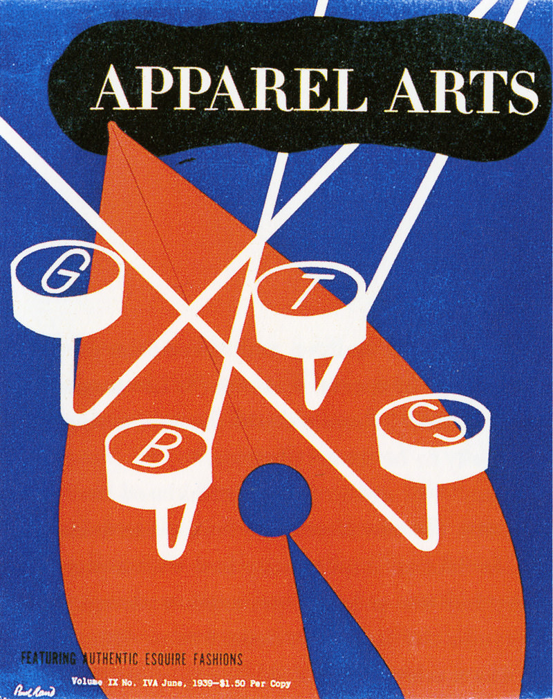
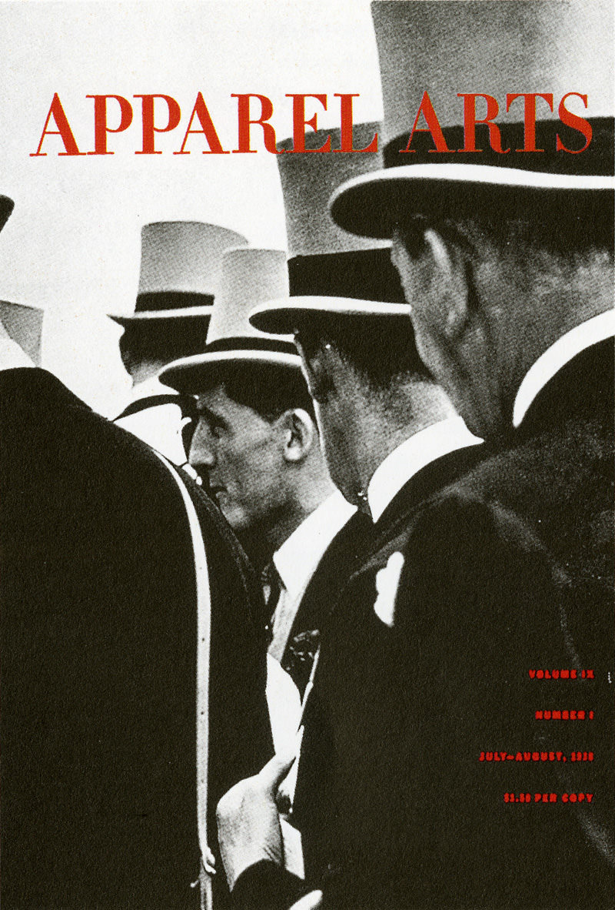
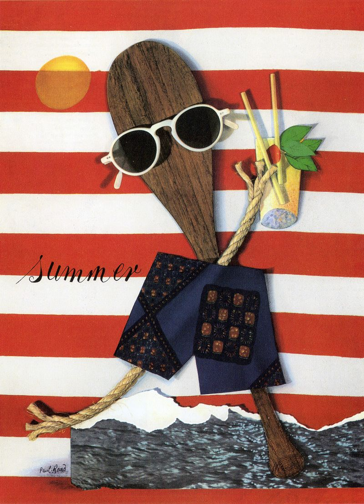

Paul rand was born on the 14th of August 1914 growing up in a Jewish family, Paul was heavily interested in design and experimented when he could by designing signs for his father's business and high school events. He would go on to attend three art institutes but this didn’t have a big influence on him, going on to say that he was “mostly self taught by reading and learning from european magazines”. These design magazines is where he would discover his love for Swiss style, he was inspired by the designers in the magazine being original and having their own identity marked on everything they did.
Although only twenty-four Paul Rand was portrayed as the most promising influence on American graphic design, by America’s leading graphic arts trade magazine. From a young age he influenced others in the graphic design world and he was beginning to gain the recognition he deserved, being singled out for advertising, editorial and promotional work while maintaining the constant need for originality and to not be hampered or controlled by tradition with each project demanding a new source of inspiration and approach, every task needed a new solution as Rand refused to be stereotyped as so many of his peers at the time had been, these principles are still being taught today as designers are influenced to follow in the footsteps of Paul Rand and approach projects with various sources of inspiration and providing something original for the audience to interpret as a piece of art not just a throw away form of advertising.
Rand believed that America’s approach to graphic design was wrong and making posters with the same colour palettes and the same layouts wasn’t good enough “it doesn’t solve any problems,... it’s run of the mill thinking. It depends completely on the skill of the illustrator; and back then there weren't many good ones”. he once again looked to the European Modernists that inspired him years before in the magazines, he could then take this inspiration on and develop a way of visually communicating his designs to the audience in a style that was unique to him and was completely original with subtle hints to the european modernists that he held in high regard.
"The greatest living graphic designer.”-Steve Jobs
Rand got a job at the Esquire bullpen, the management at Esquire would branch out and work with clients if they weren’t linked to any other design agencies. In most cases it was rand who would take these odd jobs but because of this he was able to build a portfolio of work and broaden his mind creatively. An example of this is when he worked with Abe Spinnell, the eccentric owner of Playtex, Rand would design advertisements for Playtex but he had a need and desire to stand out from the ‘crowd’ and took a different approach. He used Futura typeface instead of the industry norm of ‘perfume scripts’, this decision impressed Spinnell because it set his message apart from everyone else by symbolizing the newness of the product. These advertisements sold the product effectively and efficiently because although simpler they were more eye-catching than the typical advertisements.
An art director at Weintraub called Onofrio Paccione said “He was the guy who started this whole thing, and people forget that! It was like Cezanne; and after Cezanne came Braque and Picasso and they went on to [invent] Cubism. But it all originated with Cezanne” I think that this really interesting quote because it suggests that Rand played a massive part in building the the foundations for modern graphic design and being an inspiration for young designers to be original and to look to influences far and wide to build a catalogue of technique and knowledge to best communicate products, branding and logos to the audience.
Paul Rand would often put his skills and talents for graphic design on display and an unmatched ability to visually communicate with the audience. In 1938 Paul Rand designed magazine covers for an anniversary issue of apparel arts, in this issue Rand put on display his ability to take an ordinary photograph and transform it into dynamic compositions. Most mass-market media used the same style of a comic or romantic representation paintings combined with hard sell cover lines to sell their products, this tells us that once a style catches on designers tend to see the money that it seems to be getting the competing design companies and they want to cash in so everyone's starts to do this style and they flood the market, making it the norm and made it impossible for any of these advertising companies to stand out, the advertising needed someone who could visually communicate with the audience and catch their eye which is what all designers should have in their head when designing something.
  Rand caught on to this and used real images and played to the advantage of the juxtaposition of cut-and-stick images, due to this the magazine cover could end up telling a rebus-like story relying on the audience to be intelligent enough to analyse the cover and find out what Rand is trying to convey through the image used, which is complemented by the subtle but effective use of typeface. Designers today can learn from this when conceiving new ideas, to not feel like they have to be completely obvious in the message that they are trying to get across but to let the audience figure it out for themselves because being loud isn’t necessarily the best way to get people's attention.
Like his philosophy in his individual and freelance work of a personal and original vision he ran his design company in the same manner by going against industry norms and ideals, prior to the 1940’s most advertisements were not really designed individually as a boardman would follow an algorithm of templates and type styles that ended up making every advertisement look more or less the same before being put on an assembly line of designers where the communication of the product to the audience gets muddled and lost. Brand had a small amount of staff of art assistants, few reached to the level of director as Rand would rarely delegate accounts that he got, prefering to take projects from conception to completion himself, although he would give out other accounts to his staff that he himself didn’t find that interesting as he would like to give 100% to every project that he was apart of.
“Everything is design. Everything!”-Paul Rand
Following the second world war there was a multinational corporation boom around the world and many of these energy, technology and information conglomerates appeared at the 1939 New York World’s fair to boast their progressive aspirations for their companies, many of these companies needed advertising agencies to provide them with not just an advertisement for a individual product’s but to build a corporate identity and then came the so-called ‘ID business’ which became a specialty in the industry, this revolution motivated companies to introduce a uniform design identity.
Paul Rand was on the forefront of this with his work with IBM, he came to work for IBM when he went to dinner with Eliot Noyes an architect and industrial design consultant who was wanting to follow the other companies and provide IBM with a corporate identity.
Rand was aware of the rebranding in Europe and the way that they were doing things so was able to quickly come up with the proposal for IBM and that became the blueprint for the initial redesign. while designing brochures for the several divisions at IBM he decided to clean the logo up, although it was a slight change, Rand went from a Beton Bold condensed to a more hard edged slab serif. Rand said of the logo “...it didn’t occur to me, nor would I have done the stripes at the time. Because if I had done, it never would have passed.”
Paul Rand would go on to design various products such as letterheads, posters, merchandise and other forms of propaganda that represented IBM. It was at IBM where Rand was able to discover a consistency of structure and framework that everybody could recognise, but he believed it shouldn’t inhibit or control the creativity of the artist. The graphic design industry can learn from this way of thinking because although a level of consistency is needed it should not become stale, designers need a longer leash to develop new ways of visually communicating the product to the audience in order to catch their eye.
“Don't try to be original; just try to be good.”-Paul Rand

In conclusion I think that Paul Rand had a massive impact on not only the graphic design world but all artists alike through his principles and mindset when designing anything. Artist’s should take inspiration from Rand’s reluctance to follow an algorithm or a set format, typeface and layout that someone has already done. He made a point of looking far and wide for his inspiration and from his research he was able to come up with an original approach that is still famous today, I think that this should be used as an example for every person who is in any creative industry.
“Simplicity is not the goal. It is the by-product of a good idea and modest expectations.”-Paul Rand
Author: Daniel Lewandowski
Article title: Paul Rand - American Modernist
Website title: Paul Rand - American Modernist
URL: http://www.paulrand.design/life/index.html
Article title: Paul Rand | Biography, Designs and Facts
Website title: Famous Graphic Designers
URL: https://www.famousgraphicdesigners.org/paul-rand
Article title: 4 principles by Paul Rand that may surprise you - Designer Blog
Website title: 99designs
URL: https://99designs.co.uk/blog/famous-design/4-principles-by-paul-rand-that-may-surprise-you
Author: Stevern Heller, Jessica Helfand, Armin Hofman
Book title: Paul Rand
Publisher: Phaidon Press; New edition (25 Aug. 2000)
Author: Michael Kroeger
Foreword by: Wolfgang Weingart
Book title: Paul Rand Conversations with Students
Publisher: Princeton Architectural Press; 01 edition (1 April 2008)
Article title: Paul Rand Quotes (Author of Thoughts on Design)
Website title: Goodreads.com
URL: https://www.goodreads.com/author/quotes/27278.Paul_Rand